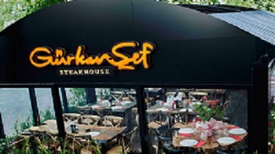

Telefon Numarası
(0536 379 97 54)

E-posta
gurkan.shef@gmail.com
Gurkan.shef
GÜRKAN STEAK HOUSE
Dünya standartlarında hizmet anlayışıyla 2014 yılında yola çıkan Gürkan Şef, bu coğrafyadan çıkıp, bu coğrafyanın insanı, kültürü, beğenileri üzerine kafa yoran bir et ustası olarak adından söz ettiriyor. Lezzeti ve sunumuyla ete bambaşka bir tarz getiren Gürkan Şef, hayata geçirdiği her projeden başarıyla çıkmaya devam ediyor.
